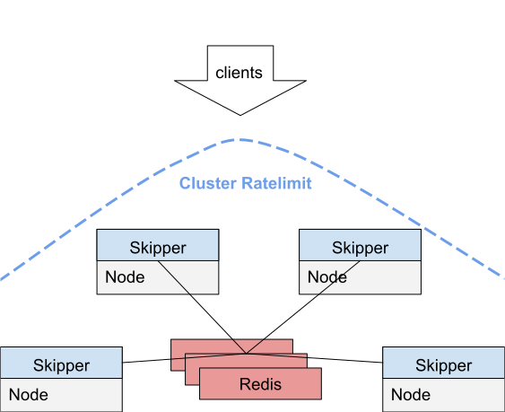
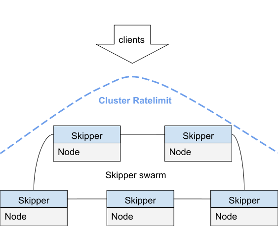

Ratelimits
Overview¶
Ratelimits are calculated for a number of requests and a
time.Duration for a given bucket. To enable rate limits you need to
run skipper with -enable-ratelimits.
A time.Duration is specified as string and can for example be “10s”
for ten seconds, “5m” for five minutes or “2h” for two hours.
As bucket skipper can use either the backend or some client information.
In case of a backend ratelimit the bucket is only one global for one route.
In case of a client ratelimit the buckets are created by the
used ratelimit.Lookuper, which defaults to the X-Forwarded-For
header, but can be also the Authorization header. So for the client
ratelimit with X-Forwarded-For header, the client IP that the first
proxy in the list sees will be used to lookup the bucket to count
requests.
Instance local Ratelimit¶
Filters ratelimit() and clientRatelimit() calculate the ratelimit
in a local view having no information about other skipper instances.
Backend Ratelimit¶
The backend ratelimit filter is ratelimit() and it is the simplest
one. You can define how many requests a route allows for a given
time.Duration to send to all backends of the route. This means that you
cannot limit traffic to a single backend instance.
For example to limit the route to 10 requests per minute for each skipper instance, you can specify:
ratelimit(10, "1m")
Client Ratelimit¶
The client ratelimit filter is clientRatelimit() and it uses
information from the request to find the bucket which will get the
increased request count.
For example to limit the route to 10 requests per minute for each skipper instance for the same client selected by the X-Forwarded-For header, you can specify:
clientRatelimit(10, "1m")
There is an optional third argument that selects the same client by HTTP header value. As an example for Authorization Header you would use:
clientRatelimit(10, "1m", "Authorization")
The optional third argument can create an AND combined Header
ratelimit. The header names must be separated by ,. For example all of the
specified headers have to be the same to recognize them as the same
client:
clientRatelimit(10, "1m", "X-Forwarded-For,Authorization,X-Foo")
Internally skipper has a clean interval to clean up old buckets to reduce the memory footprint in the long run.
Security Consideration¶
ClientRatelimit works on data provided by the client. In theory an
attacker likely can workaround all of your configurations. On the
other hand there is always a pattern in attacks, and you are more
likely being able to find the pattern and mitigate the attack, if you
have a powerful tool like the provided clientRatelimit.
Cluster Ratelimit¶
A cluster ratelimit computes all requests for all skipper peers. This
requires, that you run skipper with -enable-swarm and select one of
the two implementations:
Make sure all requirements, that are dependent on the implementation and your dataclient in use.
Redis based Cluster Ratelimits¶
This solution is independent of the dataclient being used. You have to run one or more Redis instances. See also Running with Redis based Cluster Ratelimits.
There are 3 different configurations to assign Redis instances as a Skipper Redis swarm.
Static¶
Specify -swarm-redis-urls, multiple instances can be separated by comma,
for example: -swarm-redis-urls=redis1:6379,redis2:6379.
Use this if you don’t need to scale your Redis instances.
Kubernetes Service Selector¶
Specify -kubernetes-redis-service-namespace=<namespace>, -kubernetes-redis-service-name=<name>
and optional -kubernetes-redis-service-port=<port number>.
Skipper will update Redis addresses every 10 seconds from specified service endpoints.
This allows you to dynamically scale Redis instances.
Note that when -kubernetes is set Skipper also fetches Ingresses and RouteGroups for routing,
see ingress-controller deployment docs.
HTTP Endpoint¶
Specify -swarm-redis-remote=http://127.0.0.1/redis/endpoints,
Skipper will update Redis addresses every 10 seconds from this remote URL that should return data in the following JSON format:
{
"endpoints": [
{"address": "10.2.0.1:6379"}, {"address": "10.2.0.2:6379"},
{"address": "10.2.0.3:6379"}, {"address": "10.2.0.4:6379"},
{"address": "10.2.0.5:6379"}
]
}
If you have routesrv proxy enabled,
you need to configure Skipper with the flag -swarm-redis-remote=http://<routesrv-service-name>.<routesrv-namespace>.svc.cluster.local/swarm/redis/shards.
Routesrv will be responsible for collecting Redis endpoints and Skipper will poll them from it.
Implementation¶
The implementation use Redis ring to be able to shard via client hashing and spread the load across multiple Redis instances to be able to scale out the shared storage.
The ratelimit algorithm is a sliding window and makes use of the following Redis commands:

SWIM based Cluster Ratelimits¶
SWIM is a “Scalable Weakly-consistent Infection-style Process Group Membership Protocol”, which is very interesting to use for cluster ratelimits. The implementation has some weaknesses in the algorithm, that lead sometimes to too much ratelimits or too few and therefore is not considered to be stable. For running skipper in Kubernetes with this, see also Running with SWIM based Cluster Ratelimits
In case of Kubernetes you might specify additionally
-swarm-label-selector-key, which defaults to “application” and
-swarm-label-selector-value, which defaults to “skipper-ingress” and
-swarm-namespace, which defaults to “kube-system”.
The following shows the setup of a SWIM based cluster ratelimit:

Backend Ratelimit¶
The backend ratelimit filter is clusterRatelimit(). You can define
how many requests a route allows for a given time.Duration in total
for all skipper instances summed up. The first parameter is the group
parameter, which can be used to select the same ratelimit group across
one or more routes
For example rate limit “groupA” limits the rate limit group to 10 requests per minute in total for the cluster, you can specify:
clusterRatelimit("groupA", 10, "1m")
Client Ratelimit¶
The client ratelimit filter is clusterClientRatelimit() and it uses
information from the request to find the bucket which will get the
increased request count. You can define how many requests a client is
allowed to hit this route for a given time.Duration in total for all
skipper instances summed up. The first parameter is the group
parameter, which can be used to select the same ratelimit group across
one or more routes
For example rate limit “groupB” limits the rate limit group to 10 requests per minute for the full skipper swarm for the same client selected by the X-Forwarded-For header, you can specify:
clusterClientRatelimit("groupB", 10, "1m")
The same for Authorization Header you would use:
clusterClientRatelimit("groupC", 10, "1m", "Authorization")
The optional fourth argument can create an AND combined Header
ratelimit. The header names must be separated by ,. For example all
of the specified headers have to be the same to recognize them as the
same client:
clusterClientRatelimit("groupC", 5, "10s", "X-Forwarded-For,Authorization,X-Foo")
Internally skipper has a clean interval to clean up old buckets to reduce the memory footprint in the long run.
Security Consideration¶
ClusterClientRatelimit works on data provided by the client. In theory an
attacker likely can workaround all of your configurations. On the
other hand there is always a pattern in attacks, and you are more
likely being able to find the pattern and mitigate the attack, if you
have a powerful tool like the provided clusterClientRatelimit.